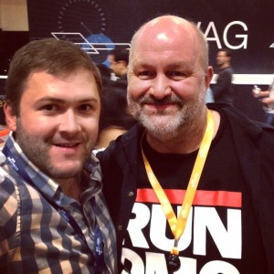

De 11-14 de Novembro a Guinux esteve presente na Amazon re:Invent 2014 considerada a maior conferência de computação em nuvem do mundo. Foram quatro dias intensos em Las Vegas, nos EUA, entre mais de 300 palestras, lançamentos,treinamentos e cases de sucesso de clientes que testemunharam ganhos em agilidade, flexibilidade e economia com a infraestrutura de TI. “A nuvem é o novo normal”, disse Andy Jassy, VP sênior da Amazon Web Services. “A questão, agora, não é SE, mas QUANDO uma empresa deve se mover para a nuvem”, completa. De acordo com o executivo, este é um caminho definitivo para aqueles que querem se manter competitivos no mercado. A própria Amazon aposta que, em breve, o braço de infraestrutura se transformará no maior negócio da empresa,ultrapassando a gigante operação de varejo da companhia.

Considerada uma conferência de aprendizagem voltada para desenvolvedores , arquitetos e tomadores de decisões técnicas, o evento contou com mais de 200 + sessões técnicas, bootcamps treinamento e laboratórios práticos . Foi uma ótima oportunidade para a Guinux se aprofundar cada vez mais no mercado de nuvem, permitindo aperfeiçoamento em alto nível na implementação de serviços cloud para os nossos atuais e futuros clientes.Ao lado: Guilherme Straioto Sócio Diretor Guinux e Werner Vogels CTO and Vice President of Amazon.com
Keynote do segundo dia com Werner Vogels:
Confira algumas fotos: